Projects
Designed and assembled a custom fixture to spin a bed sensor flange for a thermal spray coating operation. Engineered around real constraints — targeting up to 250 RPM while staying within motor torque limits — selecting 11-gauge mild steel for the rotating section and 2×2 square steel tubing for the fixed stand. Built in tab-and-slot features to simplify welding and assembly, and ran RPM and robot speed calculations across different flange diameters to dial in process parameters.
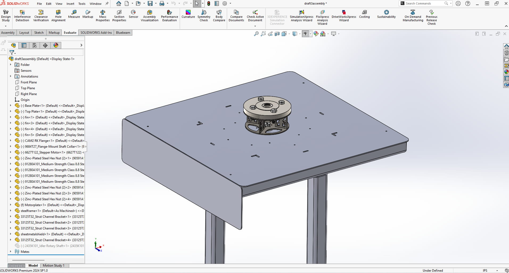
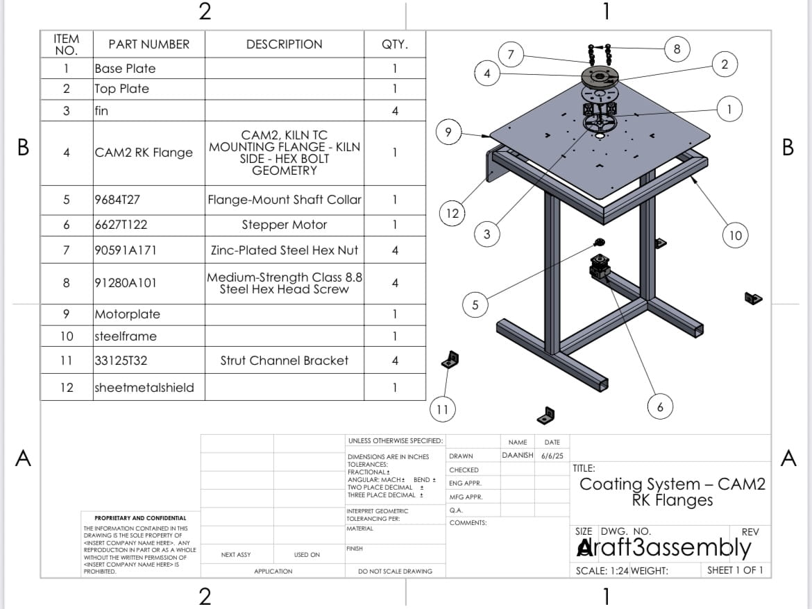
Programmed a FANUC robot via teach pendant to coat both the top surface and inner diameter of the flange, and used FANUC ROBOGUIDE to simulate and validate spray paths. Supported coating quality verification to confirm thickness met target — final coating landed in the 240–320 micron range. Part of a broader HVOF thermal spray operation that improved coating cycle time by ~12%.
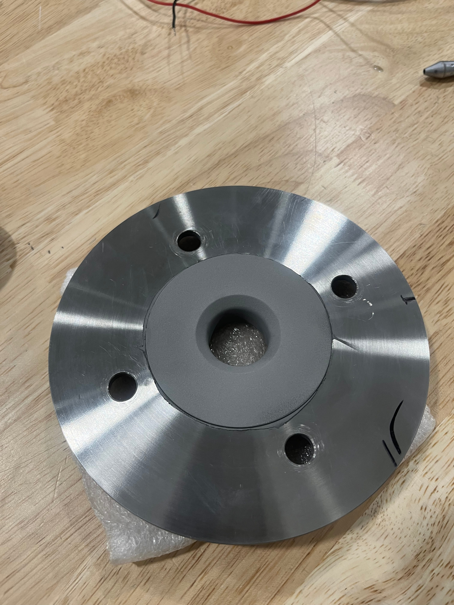
Conducted metallurgy-based testing to verify coating quality — including microhardness, surface roughness, tensile, and adhesion tests — confirming coating thickness in the 200–400 micron range and proper material hardness. Streamlined the testing workflow, cutting total process time from 9 to 7 hours.
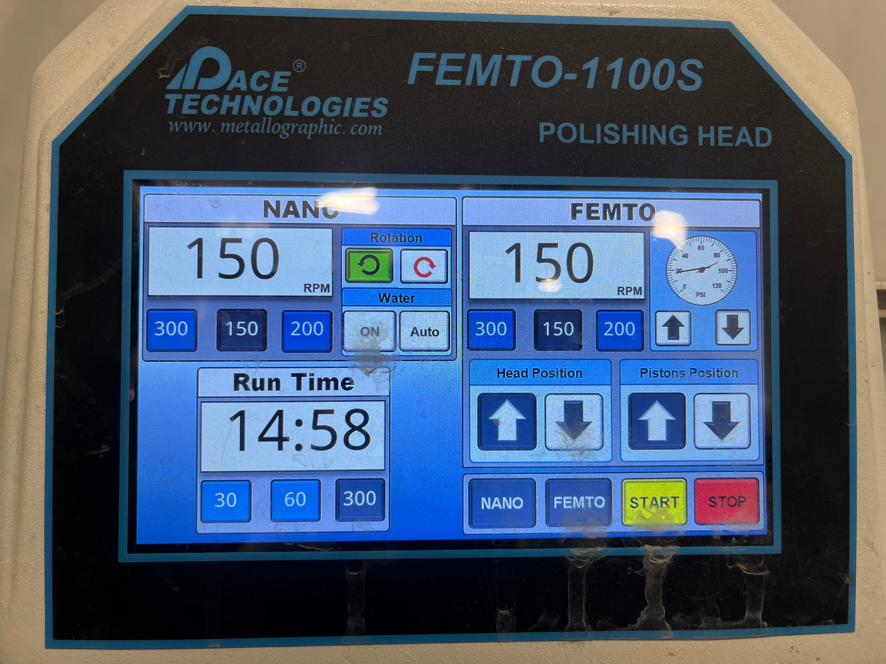
Led root cause analysis on recurring failures across hydraulic, pneumatic, and cooling systems — identifying valve wear and pressure inconsistencies across the production line. Designed and fabricated replacement valves, jigs, and lifting fixtures in SolidWorks; used CFD analysis to optimize flow performance and maintenance accessibility. Tracked procurement and material flow under ISO 9001 procedures, identifying bottlenecks in vendor coordination that directly reduced equipment replacement lead times.
Designed and 3D printed mass exchanger components for a Single Stage LCST (Lower Critical Solution Temperature) desalination loop — a thermally-driven process that separates water from brine using a polymer solution that phase-shifts at a critical temperature. The system cycles brine through warm solution (WS) and water recovery (WR) stages, with air pumps driving humid air across mass exchanger beds while humidity (RH), temperature (T), and flow (F) sensors monitor conditions at each node.
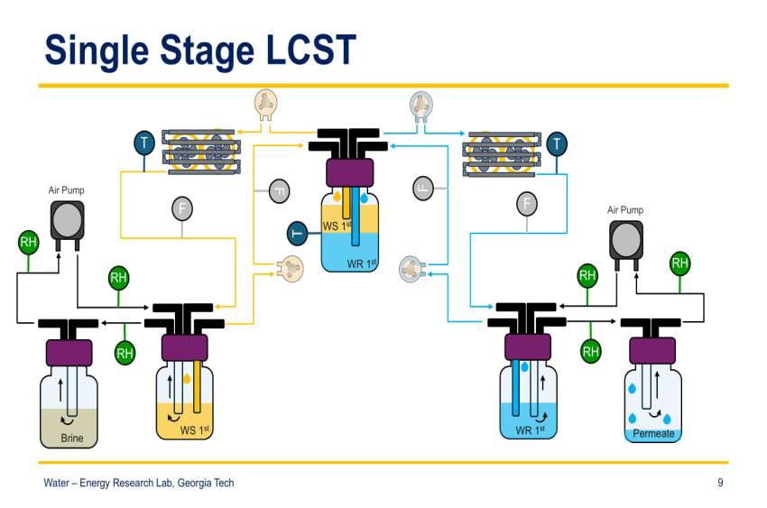
Using SolidWorks, designed detailed CAD models of the mass exchanger components and integrated mounting features for humidity and pressure sensors, control valves, a motor, and a water pump. All components were 3D printed in-house and assembled into a functional test loop. Used Sensirion sensors for real-time humidity and temperature data acquisition and analysis throughout testing.
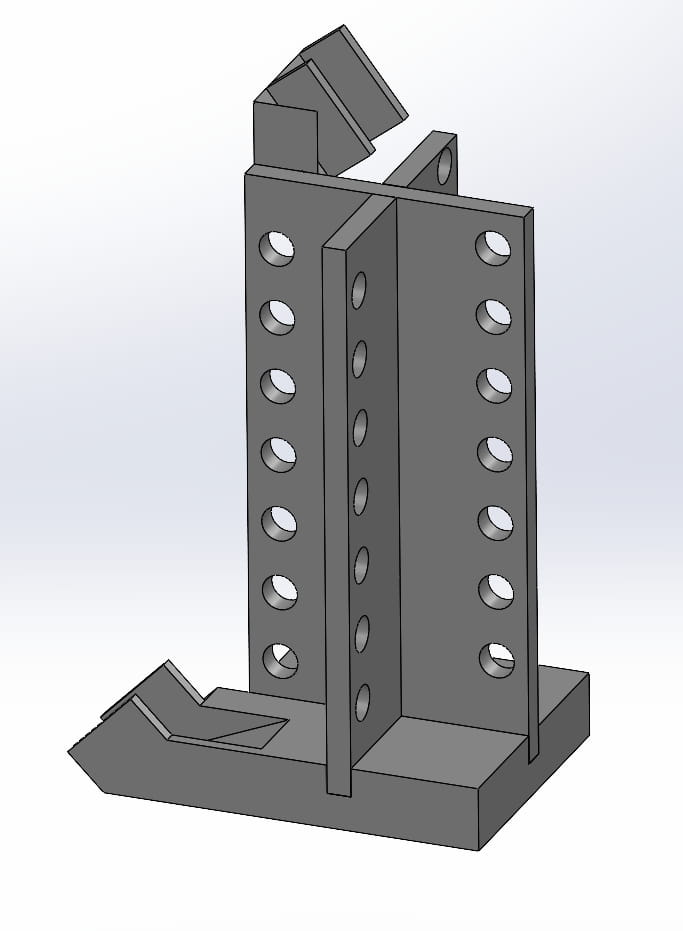
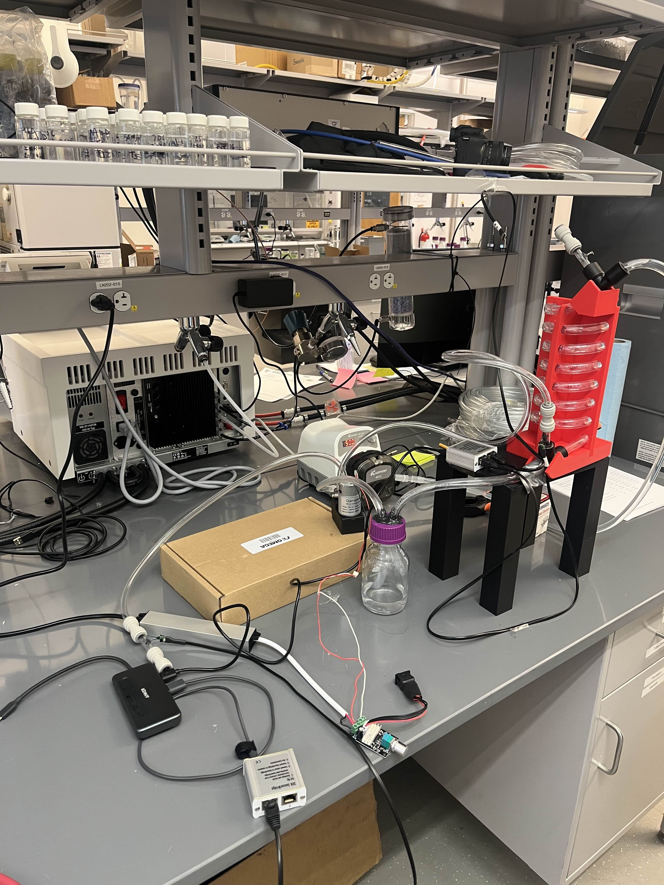
Built and tested multiple configurations of the mass exchanger to evaluate desalination performance, mass exchange efficiency, and leakage control under varying conditions. Each configuration informed design iterations — adjusting geometry, seal interfaces, and flow paths — to progressively improve system performance.
The final configuration achieved a relative humidity increase from 25.7% to 96.7%, validating the mass exchanger's ability to drive effective moisture transfer across the loop.
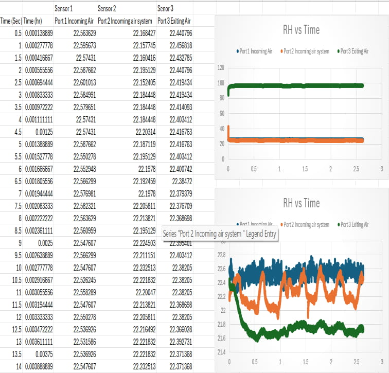
Designed a full 3D model of a classic Volkswagen Beetle in Siemens NX, starting from scratch using spline-based wireframe construction and building up to a complete solid body assembly. The project required generating all geometry from parametric curves — no imported bodies — forcing every surface patch, blend, and transition to be explicitly defined and modifiable.
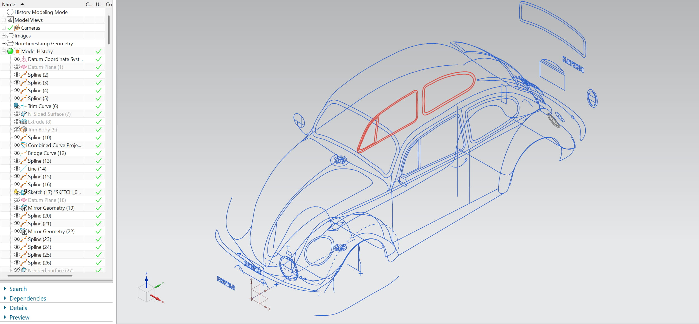
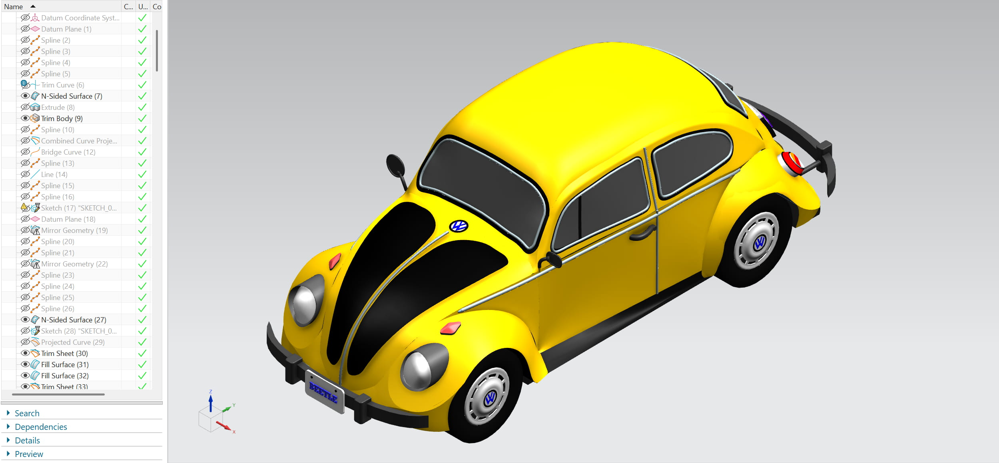
Surfaces were generated from the spline network using N-Sided Surface, Through Curve Mesh, Ruled, and Fill Surface operations. Through Curve Mesh was critical for the roof and hood panels — by defining primary and cross curves simultaneously, curvature-continuous G2 surface patches were achieved across all major body sections. Interior curves were used within UV orientation settings to control surface shape without introducing additional boundary constraints.
Achieving G2 continuity across the hood, roof, and door panels was a core requirement, enforced by carefully matching tangent direction and curvature magnitude at all shared edges between adjacent patches. Edge Blend operations were applied throughout to eliminate sharp transitions, with individual segment blending used at complex corners where chain blending caused failures. Additional features including bumpers, headlights, door trim lines, window frames, wheel hubs, and axles were modeled beyond the basic requirements.

Developed a full concept and system design for a real-world application: an autonomous drug delivery drone. The design objective was to produce a complete, manufacturable assembly within a fixed timeline — from individual components through to a final integrated model.
The drone follows a symmetric X-frame layout with four arms extending from a central hub. Each arm terminates in a propeller guard — modeled using swept and lofted features in SolidWorks to produce the curved guard geometry. The propellers themselves were modeled as separate sub-assemblies with individual blade geometry defined using surface modeling tools.
The central body houses a dedicated electronics bay with rectangular cutouts for battery and control board mounting, modeled using extruded cuts and shell features to minimize weight while maintaining structural integrity. A payload compartment hangs below the main frame, designed to securely carry a medical package — built using SolidWorks weldments and sheet metal features. Landing gear legs extend from the lower frame, modeled as structural members with filleted joints.
All parts were designed individually and brought together using SolidWorks assembly mates — coincident, concentric, and distance mates — to fully constrain the model. Creo was used for advanced modeling and final presentation visuals.
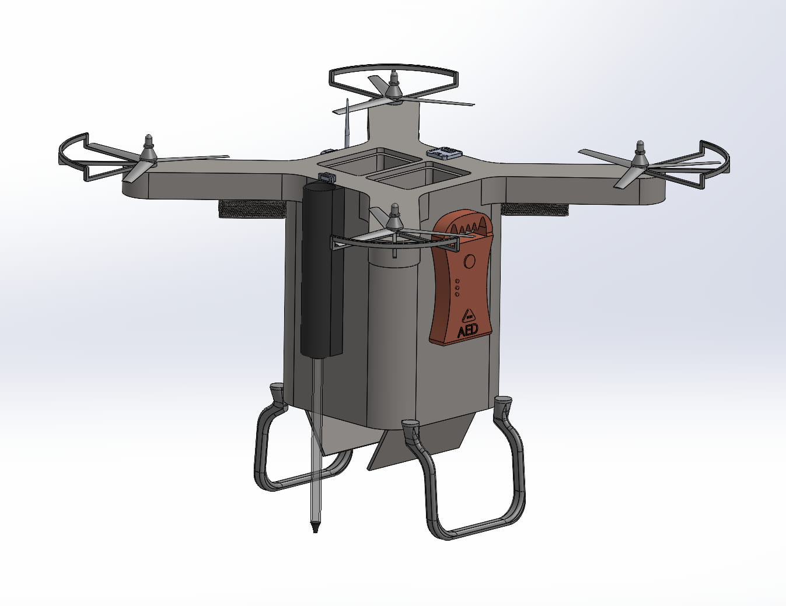
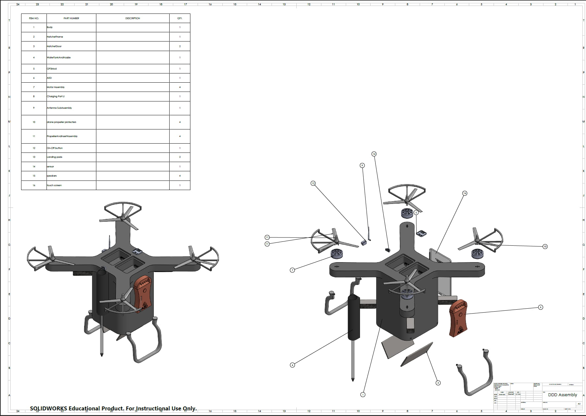
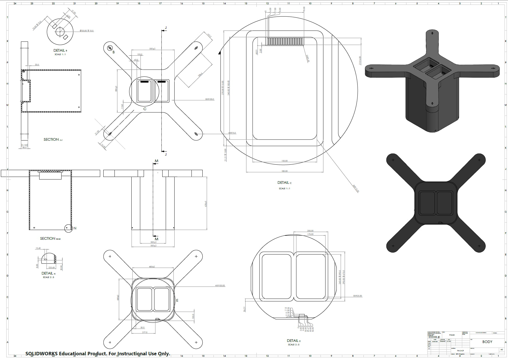
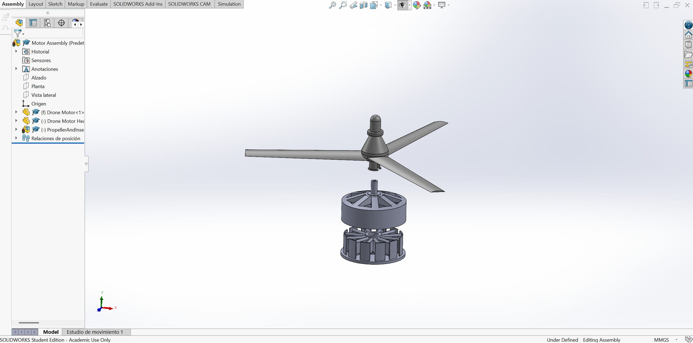